Don Mariano Marcos Memorial State University South La Union Campus — College of Education
DMMMSU-SLUC • College of Education
AI Fluency:
Foundations and Applications
A Seminar-Workshop for Pre-Service Social Studies Teachers
March 18, 2026 | 8:00 AM – 12:00 PM | [VENUE PLACEHOLDER]
[SPEAKER NAME]
[DESIGNATION / POSITION]
Overview
What We'll Cover Today
🤖
Modules 1 & 2
Foundations of AI
From machines to artificial intelligence — history, the Turing Test, and how AI actually works.
🌐
Module 3
AI in the Real World
Industry applications across healthcare, finance, education, transport, and everyday life.
🎓
Modules 4 & 5
AI in Education
Philippine context, AI fluency framework, advantages, disadvantages, and ethical considerations.
✍️
Module 6
Prompting & Practice
The TCREI framework, responsible prompting, and becoming AI-fluent educators.
Program Flow
March 18, 2026 — 8:00 AM to 12:00 PM
8:00 – 8:30 AM
Opening & Introduction
8:30 – 9:30 AM
Modules 1 & 2: Foundations & Real-World AI
9:30 – 9:45 AM
☕ Short Break
9:45 – 10:45 AM
Modules 3 & 4: AI in Education & Fluency
10:45 – 11:45 AM
Modules 5 & 6: Generative AI & Prompting
11:45 AM – 12:00 PM
Closing Remarks & Q&A
Learning Objectives
By the end of this seminar, you will be able to…
1
Explain what AI is, how it developed historically, and the key concepts behind how it works.
2
Identify how AI affects everyday life, industries, and specifically the field of education.
3
Analyze the current status of AI in Philippine education — its opportunities and challenges.
4
Apply the TCREI prompting framework to craft effective and responsible AI prompts.
5
Develop AI fluency as future social studies educators — using AI as a thinking partner, not a replacement.
💬
Opening Discussion
Think about the last 24 hours. What machines did you interact with?
Take a moment — then share with the group.
01
● Module 1
What is a Machine?
AI History & Foundations
"We begin where all technology begins — understanding what machines are, what computers do, and how one question changed everything: Can machines think?"
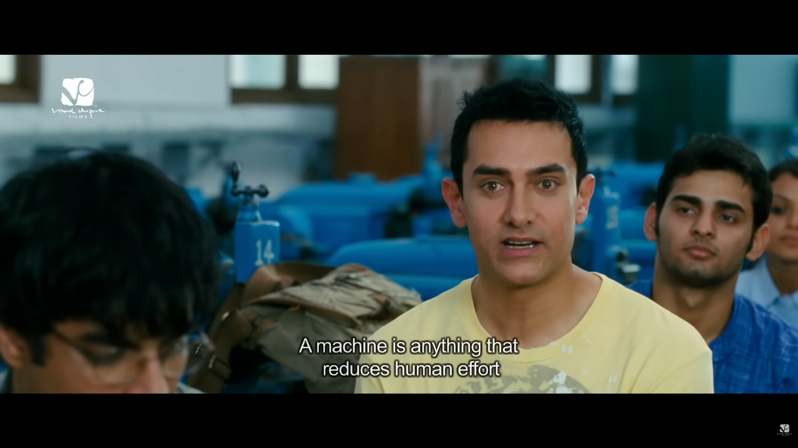
Module 1 › What is a Machine?
Definition 1
"
A machine is anything that reduces human effort.
— Rancho, 3 Idiots (2009)
Simple — but powerful. This definition captures the purpose of every machine ever made.
Definition 2
"
A machine is a device, having a unique purpose, that augments or replaces human or animal effort for the accomplishment of physical tasks.
Early computing machines filled entire rooms and required teams of operators.
Module 1 › What is a Computer?
What is a Computer?
"
An electronic device that can receive, store, process, and present data under the control of a program.
A computer is essentially a programmable machine — it can be told what to do, making it far more flexible than any single-purpose tool.
Module 1 › The Computer: Input–Process–Output
In Layman's Terms: IPO
How a computer handles any task — no matter how complex.
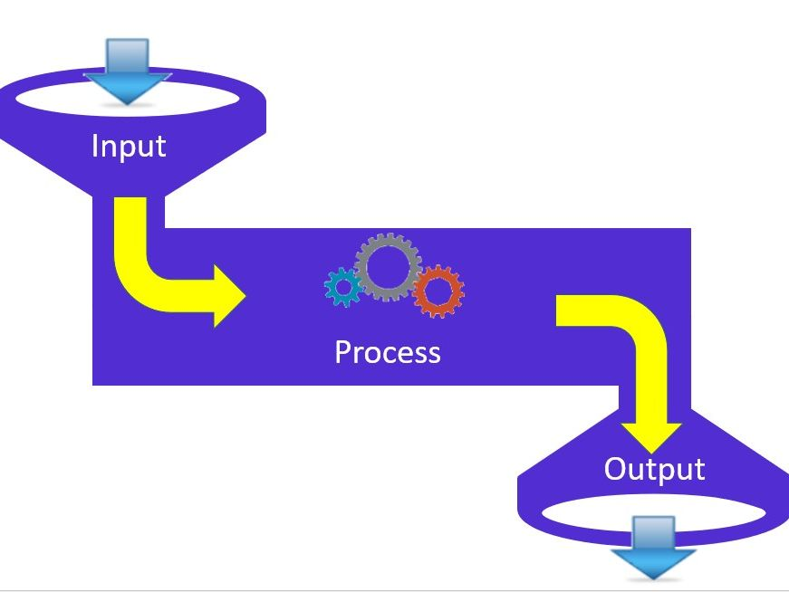
INPUT
Raw data, ideas, materials
PROCESS
Computing & transforming
OUTPUT
Product or end result
IPO — Step 1
Input
Everything starts with what you put in.
In Computing
Text typed on a keyboard, a photo taken, a voice command spoken, a file uploaded — these are all inputs.
In Daily Life
Raw materials, student answers, survey responses, sensor data — all of these are forms of input to a process.
💡 The quality of any output depends heavily on the quality of the input — "Garbage in, garbage out." This matters especially in AI.
IPO — Step 2
Process
The transformation that happens in the middle — thinking, computing, deciding.
For Humans
Reading, analyzing, reasoning, deciding — the cognitive work that turns raw input into something meaningful.
For Computers
Executing instructions, running algorithms, pattern matching — billions of calculations per second.
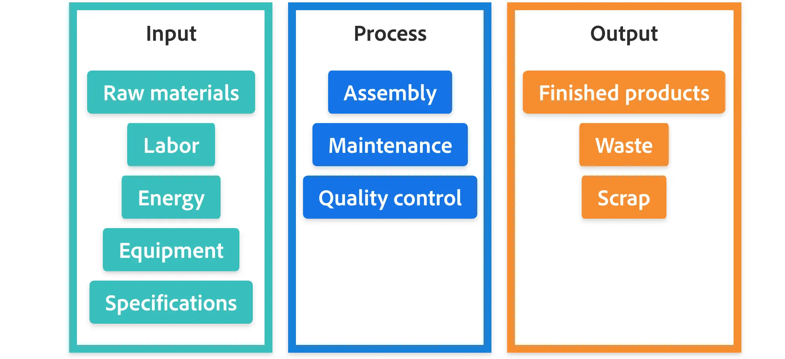
IPO — Step 3
Output
The product, the result, the end of the process — what gets delivered.
📄
Document
A report, essay, or lesson plan generated from input
📊
Data & Insights
Processed results, charts, or predictions
🗣️
Responses & Actions
AI answers, robot movements, automated tasks
The IPO model applies to every computing system — from a simple calculator to the most powerful AI. Understanding this helps us see AI not as magic, but as a very sophisticated process.
A Turning Point in History
"As time went on, technology kept advancing — until one question emerged that would change everything:"
Can machines think?
This question gave birth to the field of Artificial Intelligence.
Defining the Term
Artificial
Something that is made, produced, or done by humans — especially to seem like something natural.
The human ability to perform cognitive tasks — to think, understand, learn, and remember.
ThinkUnderstandLearnRememberSolve ProblemsCreate
Putting It Together
What is AI?
Artificial
Made or done by humans to seem natural
+
Intelligence
Ability to think, learn, understand, remember
=
Artificial Intelligence
Machines designed to simulate human cognitive abilities
💡 In simpler terms: AI is a program that learns patterns from data and uses them to make predictions, recommendations, or generate content — mimicking how humans think.
The Central Question of AI
What if we could apply cognitive abilities to machines and computers?
This question drove scientists, mathematicians, and engineers for decades. One person asked it more boldly than anyone else.
Meet the man who dared to answer it
The Father of Modern Computing
Alan Turing
1912 – 1954
British mathematician, logician, cryptanalyst, and computer scientist
His Contributions
🔐
WWII Code-Breaking
Decrypted the Nazi Enigma machine, enabling the Allies to intercept secret communications and helping shorten the war.
💻
Computing Theory
Created the concept of the "Turing Machine" — a theoretical model that laid the mathematical foundation for all modern computers.
🧠
Pioneer of AI
Asked "Can machines think?" in his 1950 paper and proposed the Turing Test — a benchmark for machine intelligence still debated today.
Encrypted Enigma message — each line an impenetrable string of letters to anyone without the key.
Geheime Kommandosache (Top Secret) — a Luftwaffe Enigma settings sheet captured by Allied forces.
The German military used the Enigma machine to send encrypted messages. Each day the code changed — with 158 quintillion possible settings. Turing's mathematical genius cracked it, giving the Allies a decisive intelligence advantage.
Source: Singh, S. (1999). The Code Book. Fourth Estate.
The Device That Started It All
The Enigma Machine
The Enigma machine — used by the German armed forces to send encrypted communications.
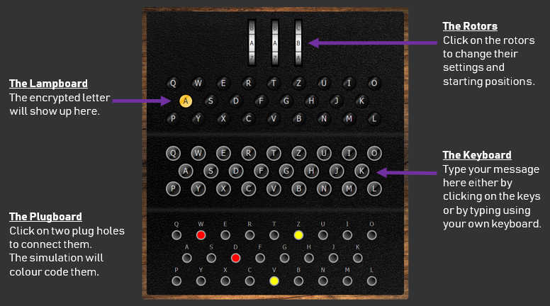
Each keystroke rotated mechanical rotors, producing a different cipher letter — making it seemingly unbreakable.
Turing built the Bombe — an electromechanical device that could test Enigma settings at superhuman speed, ultimately decoding thousands of messages per day. This was one of the first examples of a machine outperforming human cognitive ability at scale.
?
Pushing the Limits — 1950
The Turing Test
"Can machines actually think — or can they only do what humans have programmed them to do? Can a machine mimic human-level intelligence so convincingly that its responses are indistinguishable from a human's?"
The Turing Test was a tool for determining a machine's capability to exhibit intelligent behavior.
Source: Turing, A.M. (1950). Computing Machinery and Intelligence. Mind.
Module 1 › The Turing Test: Participants
Three Participants, One Question
👁️
Interrogator
Human Judge
Questions &
Responses
🤖
Interlocutor A
Machine (AI)
🙋
Interlocutor B
Human
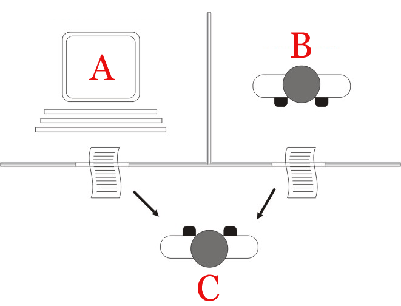
The judge must determine which respondent is the machine. If the machine consistently fools the judge, it is said to have passed the Turing Test.
Source: Turing, A.M. (1950). Computing Machinery and Intelligence. Mind, 59(236).
Module 1 › The Turing Test: Question Types
What Gets Asked
Questions designed to reveal whether responses are human or machine — each requires thoughtful, contextual, socially aware answers.
💭
Open-Ended
"What's a skill or talent you'd like to develop and why?"
❤️
Emotional
"What's something from the past that you long for?"
🌐
Opinion-Based
"What is your perspective on technology and its impact on mental health?"
🧩
Hypothetical
"Imagine you are a museum curator in the future. What artifacts of today would you display?"
🙋
Personal
"What was it like to fall in love for the first time?"
🪞
Self-Assessment
"How do you think you performed on this test? How human-like are your answers?"
Module 1 › The Turing Test: Limitations
What the Turing Test Cannot Tell Us
Despite being a landmark idea, the test has significant limitations that are still debated today.
No measure of true understanding. The test only measures whether output resembles human conversation — not whether the machine actually comprehends what it is saying.
Subjective evaluation. The judgment depends entirely on the human judge's own understanding of how humans communicate — making results inconsistent.
The Confederate Effect. Sometimes a human interlocutor is mistakenly identified as a machine — exposing the test's reliance on expectation rather than truth.
Question selection matters. If questions favor uniquely human abilities (creativity, empathy), the machine is more likely to be exposed — making the test highly sensitive to design choices.
💡 The Turing Test remains one of AI's most famous ideas — but today, we recognize that passing the test does not equal true intelligence.
Source: Turing, A.M. (1950). Computing Machinery and Intelligence. Mind.
The Story of AI — Part 1
Birth of AI
1940s – 1950s
1943McCulloch & Pitts propose that the brain could be modeled as a computing system — introducing artificial neurons, the foundation of today's neural networks.
1950Alan Turing publishes "Computing Machinery and Intelligence" — asking "Can machines think?" and proposing the Turing Test.
1956John McCarthy organizes a workshop at Dartmouth College and coins the term "Artificial Intelligence." This event is considered the official birthday of the field.
Source: Coursera Staff (2025). How Does AI Work? Basics to Know.
The Story of AI — Part 2
Early Programs & AI Winters
1960s – 1990s
Early Promises ✅
ELIZA (1966) — The first chatbot. Fooled users into thinking it was a real therapist by mirroring their responses.
MYCIN — Expert system that helped diagnose blood infections using "if-then" rules.
Deep Blue (1997) — IBM's chess AI defeats world champion Garry Kasparov — the first machine to beat a reigning human champion.
The AI Winters ❄️
Progress could not keep up with the hype. Researchers over-promised and under-delivered.
A critical 1973 report (Lighthill Report) argued AI had failed its promises — leading to massive funding cuts. First AI Winter.
A second winter followed in the late 1980s as expert systems proved costly and fragile.
But the groundwork was still being laid: backpropagation (1986) gave neural networks a way to learn from mistakes.
Source: Coursera Staff (2025). How Does AI Work?
The Story of AI — Part 3
The Modern Breakthrough
2000s – 2010s
Three key ingredients finally came together: massive data from the internet, powerful hardware (especially GPUs), and better algorithms like deep learning.
2016 — Defeated world Go champion; a game more complex than chess
Source: Coursera Staff (2025). How Does AI Work?
The Story of AI — Part 4
The Generative AI Era
2020 – Present
Generative AI refers to systems that create new content — text, images, audio, video, and code — by learning patterns from massive datasets. This is the era of ChatGPT, DALL-E, and Gemini.
What Makes This Era Different
GPT-3 (2020) — 175 billion parameters. AI could generate human-like text with minimal training.
ChatGPT (2022) — Made generative AI accessible to everyone. Reached 100 million users in 2 months.
800 million weekly active users as of October 2025.
Key Technology: LLMs
Large Language Models (LLMs) are AI systems trained on enormous amounts of text to learn language patterns. They don't truly "understand" — they predict the most likely next word, sentence, or idea.
This is what powers ChatGPT, Gemini, and Copilot — the tools you'll be using in this seminar.
Source: Coursera Staff (2026). What Is ChatGPT?
Module 1 › Key Concepts at a Glance
Before We Move On
Five foundational concepts that will appear throughout this seminar.
Machine Learning
AI learns from examples rather than following hard-coded rules. Three types: supervised (labeled data), unsupervised (finding patterns), and reinforcement (trial-and-error with rewards).
Neural Networks & Deep Learning
Layers of artificial "neurons" inspired by the brain that can learn increasingly complex patterns. Deep learning stacks many layers to recognize faces, translate language, or generate images.
Large Language Models (LLMs)
Systems like GPT that learn statistical patterns in language to produce coherent text. They don't truly "understand" — they predict the most probable continuation based on training data.
Training Data
AI reflects whatever data it was trained on — including any biases in that data. The quality, diversity, and fairness of training data directly shapes AI behavior and outputs.
Prompt Engineering
Designing effective inputs (prompts) to guide AI outputs — a practical skill you'll develop in Module 6 of this seminar. The better your prompt, the better the AI's response.
Source: Coursera Staff (2025). How Does AI Work? Basics to Know.
02
● Module 2
AI in the Real World
Industry Use Cases & Daily Life
AI is no longer science fiction — it's already reshaping healthcare, finance, education, retail, and how you spend your everyday life. In this module, we explore where AI is already at work.
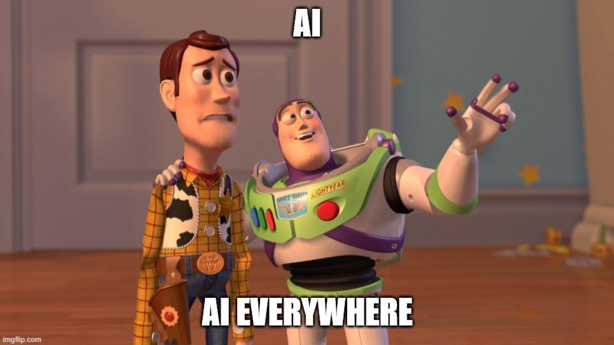
Module 2 — Overview
AI is already everywhere.
From hospitals to your smartphone — AI is embedded in industries and daily life in ways most people don't even notice.
HealthcareFinanceRetailEducation+ more
Module 2 › AI in Healthcare
AI in Healthcare
Improving patient outcomes and saving lives across the globe.
🦠 Disease Mapping
AI analyzes social media, news, and government data to predict and track infectious disease outbreaks — identifying them before they become widespread.
💬 Virtual Health Assistants
AI-powered assistants provide patients 24/7 medical advice, medication reminders, and appointment scheduling.
🩻 Automated Image Diagnosis
AI analyzes X-rays and CT scans to detect signs of disease, helping radiologists diagnose conditions earlier and more accurately.
🧬 Precision Medicine
AI uses an individual's genetic profile to guide personalized prevention, diagnosis, and treatment decisions.
Source: Tableau Data Insights. Artificial Intelligence: Industry Examples and Everyday Impacts.
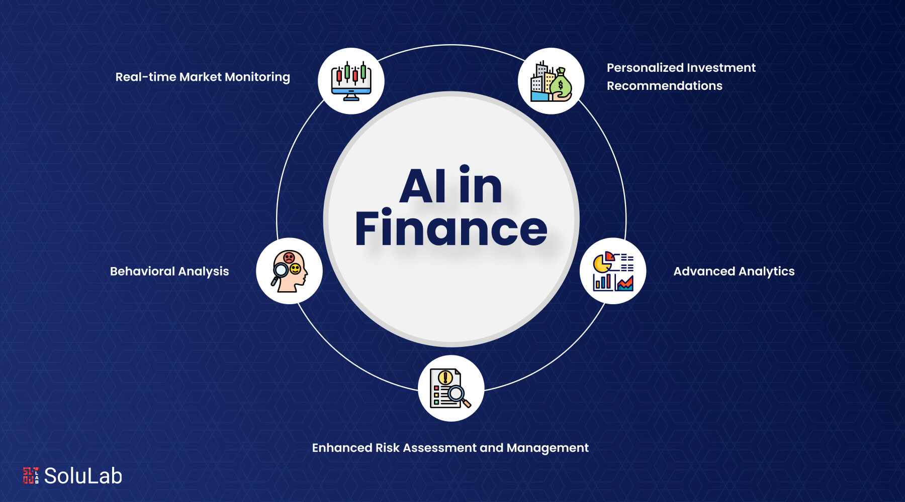
Module 2 › AI in Finance
AI in Finance
One of the earliest sectors to adopt AI — automating and protecting our money.
🚨 Fraud Detection & Prevention
AI analyzes vast transaction data to spot anomalies and fraudulent activity in real time, protecting customers from financial loss.
📈 Algorithmic Trading
AI executes trades at speeds impossible for humans — analyzing market data and identifying trends in fractions of a second.
🏦 Personalized Banking
AI analyzes customer data to recommend tailored financial products — credit cards and loans matched to individual profiles.
📊 Credit Scoring
AI models assess creditworthiness using alternative data like utility payments and rental history, going beyond traditional scores.
Source: Tableau Data Insights. Artificial Intelligence: Industry Examples and Everyday Impacts.
Module 2 › AI in Retail
AI in Retail
Understanding customers better — and predicting what they want before they know it.
📦 Inventory Management
AI predicts product demand, ensuring the right stock is available at the right time — reducing overstock and shortages.
🎯 Customer Recommendations
AI analyzes browsing and purchase history to serve personalized product suggestions that increase sales and loyalty.
🔍 Visual Search
Customers upload a photo; AI searches the retailer's inventory to find matching or similar items instantly.
💲 Dynamic Pricing
AI adjusts prices in real-time based on demand, competitor pricing, and market conditions to maximize profit while staying competitive.
Source: Tableau Data Insights. Artificial Intelligence: Industry Examples and Everyday Impacts.
Module 2 › AI in Manufacturing
AI in Manufacturing
Making factories more efficient, productive, and safe.
🔧 Predictive Maintenance
AI sensors monitor machinery in real time — detecting vibration and temperature changes to predict failures before they happen, scheduling maintenance proactively.
🔬 Quality Control
AI computer vision systems inspect products for defects invisible to the human eye, ensuring only high-quality goods reach the market.
🤖 Robotics
AI-enabled robots handle repetitive or dangerous tasks like welding and painting, freeing human workers for more complex, value-added activities.
🪞 Digital Twins
Virtual replicas of physical assets let manufacturers simulate performance and identify potential problems before they occur in the real world.
Source: Tableau Data Insights. Artificial Intelligence: Industry Examples and Everyday Impacts.
Module 2 › AI in Education
AI in Education
Creating more personalized and effective learning experiences for every student.
🎯 Adaptive Learning
AI-powered platforms adjust difficulty and content based on each student's individual needs and learning pace — ensuring challenge without overwhelm.
📝 Automated Grading
AI automates grading of assignments and assessments, freeing teachers to focus on instruction and meaningful student support.
📚 Smart Content Creation
AI helps educators generate quizzes, flashcards, and study materials tailored to specific learning objectives and student levels.
🌍 Universal Access
Real-time AI captioning and translation make education more accessible to students with disabilities or language barriers.
Source: Tableau Data Insights. Artificial Intelligence: Industry Examples and Everyday Impacts.
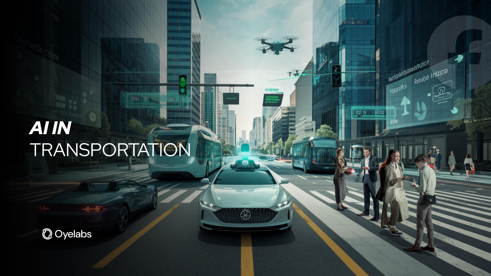
Module 2 › AI in Transportation
AI in Transportation
Making transportation safer, more efficient, and more sustainable.
🚗
Autonomous Vehicles
Self-driving cars and trucks use AI to navigate roads and traffic — with lane-keeping assist and automatic braking already common in many cars.
🚦
Traffic Management
AI analyzes data from cameras and sensors to optimize traffic flow, reduce congestion, and improve travel times city-wide.
📱
Ride-Sharing & Drone Delivery
Apps like Uber and Lyft use AI for matching, pricing, and ETAs; companies are exploring AI-powered drones for last-mile delivery.
Source: Tableau Data Insights. Artificial Intelligence: Industry Examples and Everyday Impacts.
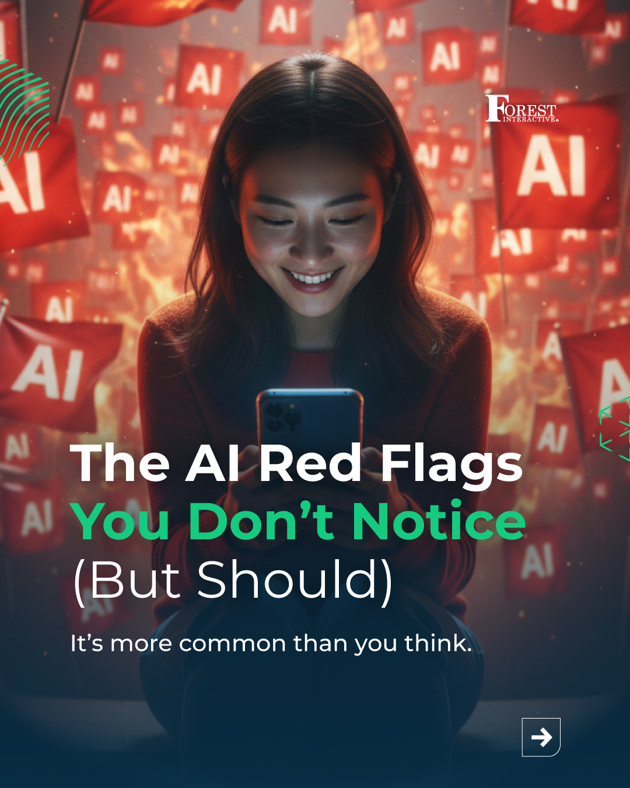
Part 2 — Daily Life
AI You Don't Notice (But Should)
Beyond industries — AI quietly shapes your daily routines, decisions, and experiences in ways most people never realize. Let's explore 10 examples from your own life.
Module 2 › Part 2 › Smart Home & Energy
① Smart Home
Smart Home Devices & Energy Consumption
Smart thermostats like Nest use AI to learn your schedule and temperature preferences. Over time, they automatically adjust heating and cooling to optimize energy usage — saving money and reducing your carbon footprint.
💡 The Key Insight
AI is acting as an invisible hand — making your home more energy-efficient without you having to lift a finger.
Source: Balto Blog. How AI Already Impacts Our Lives in Unforeseen Ways.
Module 2 › Part 2 › Navigation & Traffic
② Navigation
Navigation & Traffic Predictions
Apps like Google Maps and Waze use AI to analyze real-time traffic data and suggest the fastest routes — but they also use predictive AI to anticipate traffic patterns based on historical data.
AI helps you avoid traffic jams before they even happen.
Saving you time, fuel, and frustration on your daily commute — automatically.
Source: Balto Blog. How AI Already Impacts Our Lives in Unforeseen Ways.
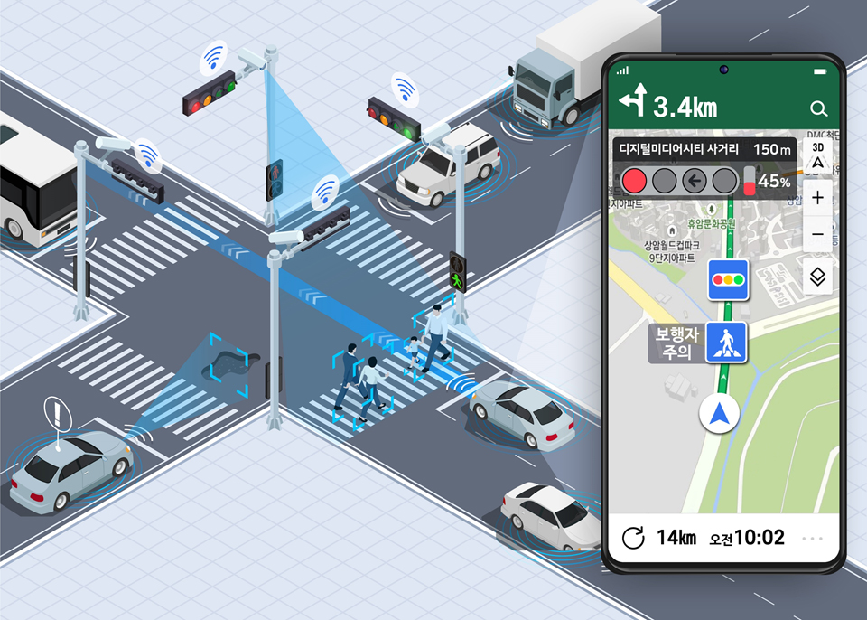
Module 2 › Part 2 › Email Filtering
③ Email
Email Filtering & Spam Detection
We often take for granted that our inboxes are relatively clean. This is thanks to AI algorithms that analyze incoming emails and filter out spam, phishing attempts, and malicious content automatically.
These algorithms continuously learn from new patterns — recognizing emerging threats and protecting you from security risks without any action on your part.
Source: Balto Blog. How AI Already Impacts Our Lives in Unforeseen Ways.
Module 2 › Part 2 › Curated Entertainment
④ Entertainment
Curated Entertainment & Content
Streaming platforms like Netflix and Spotify use AI recommendation engines to suggest movies, shows, and music based on your viewing and listening history.
What does this mean for culture?
These algorithms subtly shape our cultural consumption — introducing us to content we'd never have found, but also creating personalized echo chambers of taste.
Source: Balto Blog. How AI Already Impacts Our Lives in Unforeseen Ways.
Module 2 › Part 2 › Social Media
⑤ Social Media
Social Media & Filter Bubbles
The content you see on your social media feed is not random — it is curated by AI algorithms designed to maximize your time and engagement on the platform.
AI analyzes your likes, shares, comments, and view time. While this feels personalized, it creates "filter bubbles" that reinforce existing beliefs and limit exposure to diverse perspectives — a critical concern for educators and students alike.
Source: Balto Blog. How AI Already Impacts Our Lives in Unforeseen Ways.
Module 2 › Part 2 › Customer Service
⑥ Customer Service
Customer Service & Chatbots
More and more companies use AI-powered chatbots to handle customer service — answering questions, resolving simple issues, and processing orders — providing instant support 24 hours a day, 7 days a week.
While some interactions are seamless, others reveal the technology's current limitations — especially when a human problem requires nuance, empathy, or judgment that AI cannot yet replicate.
Source: Balto Blog. How AI Already Impacts Our Lives in Unforeseen Ways.
Module 2 › Part 2 › Fraud Detection
⑦ Financial Security
Fraud Detection & Financial Security
Banks and credit card companies use AI to monitor every transaction for suspicious activity. If an unusual transaction is detected — like a large purchase in a foreign country — AI flags and may block it automatically.
This happens entirely behind the scenes, securing your finances 24/7 without you having to constantly monitor your accounts.
Source: Balto Blog. How AI Already Impacts Our Lives in Unforeseen Ways.
Module 2 › Part 2 › Photo Organization
⑧ Photos
Photo Organization & Editing
Your smartphone's photo app uses AI to organize photos by recognizing faces, objects, and scenes — so you can easily search for specific people or places without any manual tagging.
AI also powers automatic photo enhancement — adjusting lighting, sharpness, and color to create a better shot with a single tap. The camera you carry is already AI-powered.
Source: Balto Blog. How AI Already Impacts Our Lives in Unforeseen Ways.
Module 2 › Part 2 › Healthcare Diagnostics
⑨ Healthcare
Healthcare Diagnostics & Treatment Planning
AI assists doctors in diagnosing diseases and planning treatments. Algorithms can analyze medical images to detect signs of cancer or other conditions — sometimes earlier than a human doctor could.
What this means for patients:
Earlier interventions and better outcomes — AI as a partner to, not a replacement of, the physician's judgment and human care.
Source: Balto Blog. How AI Already Impacts Our Lives in Unforeseen Ways.
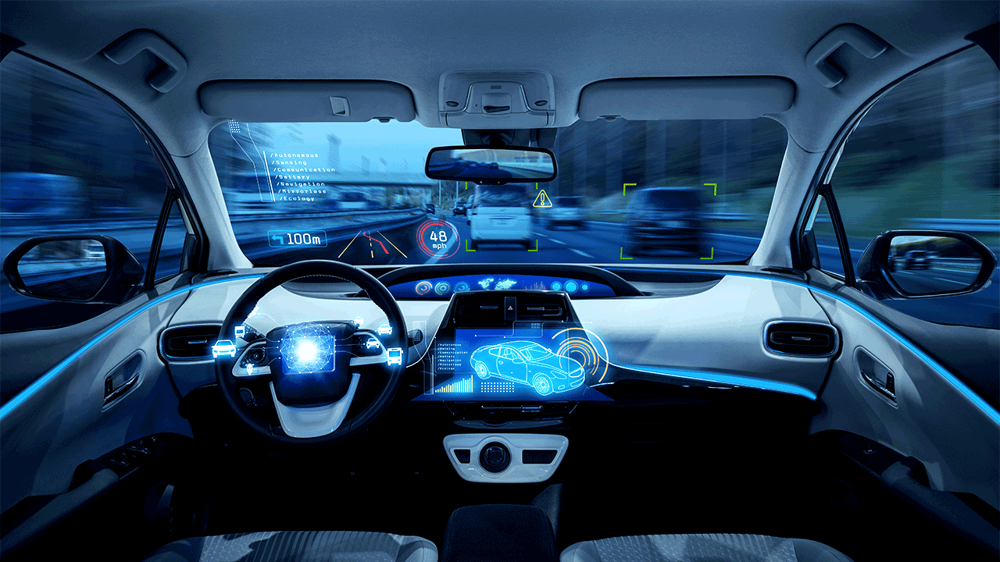
⑩ Autonomous Vehicles
Autonomous Vehicles & Driver Assistance
AI making roads safer — one feature at a time.
🚗
Fully Autonomous Vehicles
Self-driving cars and trucks use AI to navigate roads and traffic — still in development but rapidly advancing.
🛡️
AI-Assisted Features (Already Here)
Lane-keeping assist, automatic emergency braking, and adaptive cruise control are already standard in many vehicles — AI is already driving alongside you.
Source: Balto Blog. How AI Already Impacts Our Lives in Unforeseen Ways.
Discussion
The Double-Edged Sword of AI
While AI integration brings enormous benefits, it also raises critical questions we must engage with honestly.
🔒
Privacy
AI systems collect and process vast amounts of personal data — often without users fully understanding the scope.
⚖️
Bias
AI reflects the biases in its training data, which can lead to discriminatory decisions in hiring, lending, and policing.
🤝
Human Agency
As AI automates more decisions, we must ask: are we gaining convenience at the cost of our own autonomy and judgment?
Source: Balto Blog. How AI Already Impacts Our Lives in Unforeseen Ways.
Module 2 › Key Takeaways
Module 2 — What We Learned
AI is already embedded in industries and daily life — often invisibly.
🏥 Industry AI
AI is actively reshaping healthcare, finance, retail, manufacturing, education, and transportation — improving outcomes, efficiency, and access worldwide.
📱 Daily Life AI
From your email inbox to your navigation app to your entertainment feed — AI is constantly working behind the scenes, often invisibly.
⚠️ Critical Awareness
AI integration raises genuine questions about privacy, algorithmic bias, filter bubbles, and the erosion of human agency that we must engage with seriously.
🎓 For Future Educators
Understanding these real-world AI applications helps you guide students to be informed, critical, and responsible participants in an AI-driven world.
💬
Reflection: Which AI applications we discussed today surprised you the most? Which ones do you already use daily without thinking of them as "AI"?
Source: Tableau Data Insights & Balto Blog. AI Industry Examples & Daily Life Impacts.